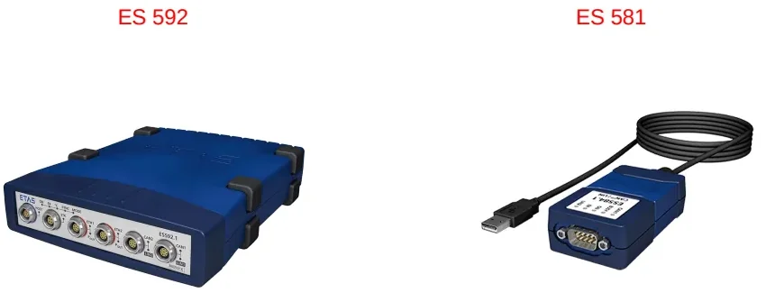
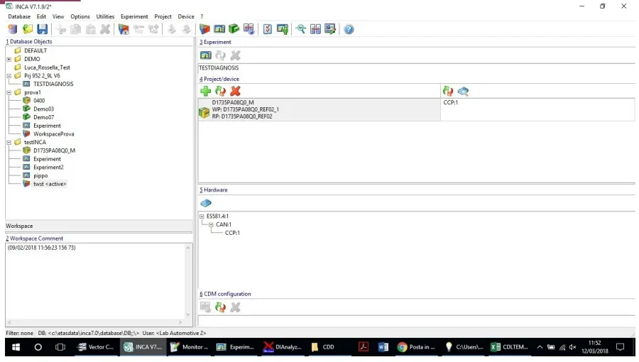
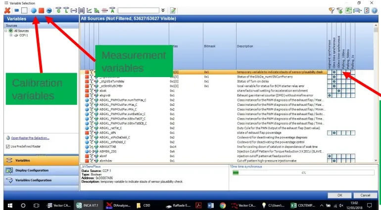

INCA & MDA — Calibration, Flashing and Measurement Analysis¶
Welcome to the lesson that turns you from a bus watcher into a calibrator. Until now you have mostly observed what ECUs broadcast on CAN. Here you get your hands on the ECU itself: reading its internal variables live, tuning its parameters while it runs, flashing new software, and analyzing the recordings afterwards.
By the end of this article you will be able to:
- connect INCA to an ECU and build a working measurement setup from scratch,
- tell a production ECU from a development one — and know why it matters,
- measure internal signals with the right sampling rate and edit calibrations safely,
- flash software onto an ECU without bricking it,
- compare calibration datasets in CDM and analyze recordings in MDA.
Take your time with this one. The concepts are simple, but the habits (naming, alignment, page management) are what separate a reliable calibrator from someone who loses an afternoon to a mismatched dataset.
Why INCA exists¶
Every ECU in a modern vehicle runs two kinds of software: a firmware and an application containing the control algorithms (combustion control, power management, emission control). That application ships with a default set of parameters — thousands of thresholds, maps and enable flags. Calibration is the craft of customizing those parameters for a specific vehicle, so the same software can power many different models and variants.
INCA (INtegrated Calibration and measurement Application, by ETAS) is the industry-standard tool for this. With it you can:
- read the internal variables of the ECU software in real time,
- modify calibration parameters while the ECU is running,
- record measurements for later analysis,
- download (flash) new software onto the ECU memory.
Its companion MDA (Measure Data Analyzer) covers the offline side: opening the measurement files recorded with INCA and digging into the signals after the test. This article walks you through both.
Why internal signals matter
A CAN log (e.g. from CANalyzer) only shows what the ECU broadcasts. INCA reads the variables inside the software — intermediate calculation results, internal states, diagnosis flags — so you can spot a misalignment between what the ECU computes and what it puts on the bus. When a function "works on the bus" but behaves strangely in the vehicle, this is where you look.
Production vs. development ECUs¶
Before you connect anything, look at the ECU in front of you. There are two kinds, and the difference is in the memory they carry:
| Production (closed) ECU | Development (open) ECU | |
|---|---|---|
| Memories | ECU flash, ECU RAM, EEPROM | same, plus ETK flash and ETK RAM |
| Calibration access | none on the fly | Working Page / Reference Page in ETK RAM |
| Typical cost | ~50–100 € | up to ~15,000 € (depends on microcontroller) |
| Use | customer vehicles | test benches, prototype vehicles |
The three memories of a production unit are:
- ECU flash — the processor memory programmed with the complete software,
- ECU RAM — volatile support memory,
- EEPROM — non-volatile memory where the ECU saves data (learned values, DTCs) before switching off.
A development ECU adds two ETK memories:
- ETK flash — an additional memory that stores one calibration page while the ECU is switched off,
- ETK RAM — volatile memory holding two calibration pages that can be switched on the fly:
- the Reference Page (RP) — read-only, the default calibration dataset delivered with the software by the supplier,
- the Working Page (WP) — writable, the dataset you modify during development.
You can spot a development ECU physically: an ETK cable comes out of it. That port is exactly what a closed production ECU does not have — which is why live calibration on a customer's car is simply not possible.
ETAS hardware interfaces¶
INCA talks to the ECU through ETAS interface hardware. Which box you need depends on the communication channel — and on your budget:

- ES 592 — the complete interface: connects to a development ECU via the ETK cable or via CAN (CCP protocol), and to production ECUs via CAN.
- ES 581 — the simpler interface: CAN only (CCP), for both production and development ECUs. It also offers a CAN-monitoring functionality to watch bus traffic.
- ES 89x family (e.g. ES 891) — modular interfaces for when you must combine several ECUs and buses in one setup: one host port to the PC, ETK ports for development ECUs, plus CAN FD and LIN channels, so a single log can contain internal ECU signals and bus traffic together.
Single-ECU shortcut
If you only need the internal signals of one development ECU, you can skip the interface box entirely and use an ETK host cable straight from the ECU to the PC. And if you only need CAN traffic, an ordinary CAN interface through the OBD socket is enough — no ETAS hardware required.
Choose the hardware from the goal of your measurement: logging the internal signals of one ECU is cheap; merging internal signals, multiple ECUs, CAN FD and LIN into one synchronized log requires the bigger (and much more expensive) modular interfaces.
INCA's main window¶
Open INCA and you will see six macro areas. Knowing them by name saves you a lot of hunting:
- Database objects — the tree of folders, projects, workspaces and experiments,
- Workspace comment — free notes attached to the selected workspace,
- Experiment — the measurement/calibration configuration in use,
- Project/Device — the ECU software project associated with the workspace,
- Hardware — the interface device and its communication channels,
- CDM configuration — quick access to the Calibration Data Manager.

Setting up a workspace, step by step¶
Everything in INCA lives in a database, and connecting to an ECU always follows the same sequence. Do this once carefully and every future session is a single click:
flowchart TD
A["Right-click Database Objects<br/>Add → Top Folder"] --> B["Right-click folder<br/>Add ECU Project<br/>(A2L + HEX/S19)"]
B --> C["Add Workspace<br/>to the folder"]
C --> D["Project/Device: press +<br/>associate the software"]
D --> E["Hardware section:<br/>search & select interface"]
E --> F["Add Experiment<br/>to the workspace"]
F --> G["Initialize (F3)<br/>green icons = connected"]- Create a top folder. Right-click on Database Objects → Add → Top Folder. This is the container that keeps everything for a project together.
- Add the ECU project (the software). Right-click the folder → Add ECU Project and follow the wizard. INCA can only talk to an ECU whose software it knows, so you must import two files:
- the A2L file — an ASAM-standard description of every variable and parameter, with physical characteristics and the memory address where each element lives;
- the calibration dataset — HEX, S19, csv, srec, … depending on the supplier. S19 and HEX serve the same purpose; some projects deliver several dataset files (e.g. separate files with immobilizer variants — pick the one matching your vehicle configuration).
- Create a workspace in the same folder (Add Workspace). The workspace holds everything needed to connect: software + hardware + experiment.
- Associate software and hardware. In the Project/Device section press + and add the software; in the Hardware section click the hardware icon and choose the device matching your communication channel (ETK, CCP, …). Use the magnifier icon to search for the connected interface — when the hardware is found and correctly associated its icon turns green (red means not connected/not aligned).
- Add an experiment to the workspace (or import a ready-made one —
experiments are exchanged as
.EXPfiles, so a colleague or calibrator can hand you the exact set of variables they need).
Protect your base dataset
After importing, INCA shows the dataset next to the project name. A good habit is to duplicate it and keep the original frozen (right-click → set read-only / freeze). That way you always have a pristine reference dataset, and you make your modifications on the copy. Future-you will be grateful.
Working Page vs. Reference Page¶
This is the mental model that governs everything you do on a development ECU, so make sure it clicks:
- Reference Page (RP) — read-only; the supplier's default calibration.
- Working Page (WP) — writable; your modified dataset.
INCA can switch between the two pages in real time, but you cannot edit calibrations while the ECU runs on the reference page — switch to the working page first. The status bar tells you where you stand: ECU off / no access when there is no communication, a checksum warning when WP and RP diverge, and zero differences when everything is aligned.
Alignment means that three copies of the calibration are consistent: the working page, the reference page, and what is actually flashed on the ECU. Press F3 (Fn+F3 on laptops) or the initialize hardware button to start initialization and alignment. Two settings make life easier:
- enable "initialize automatically" so INCA aligns on its own at every connection,
- if you have unsaved work in the working page, enable the download to working page option and set the auto-start behavior to always working page, so your modifications survive re-initialization — and always confirm with Apply.
The experiment: measuring and calibrating¶
The experiment is your working environment: the place where you watch and modify the ECU live. It contains the measurement and calibration variables you selected for your task.
Selecting variables and rasters¶
Open the Variable selection window to pick what to follow:

- Measurement variables — readable values: raw sensor data, actuator command values, internal states. For each of them you choose an acquisition raster (sampling period).
- Calibration variables — writable parameters: torque maps, diagnosis enables, thresholds.
Variables are grouped by software module (suppliers build the software from
many modules), and the search box accepts wildcards (*) when you only
remember part of a signal name.
Choose the raster faster than the signal
The raster is the sampling time of your signals. If a variable evolves every 25 ms but you watch it at 100 ms, you lose three samples out of four — a peak to 400 and back to zero can pass completely unseen. Typical rasters range from 25 ms (the fastest on some ECUs) up to 125 ms or more; other projects offer 10 ms or even 1 ms. Match the raster to the real dynamics of what you are testing. If you forgot to set it, you can change the measure rate afterwards from the experiment window.
Running the measurement¶
Three commands control acquisition:
- Start visualization — watch the variables live, without saving,
- Start recording — watch and save to a measurement file,
- Stop measuring — stop both.
The maximum recording time depends on your PC's free disk space and the number of selected variables (from about an hour on a loaded setup to many hours). While you calibrate on the working page, three shortcuts become muscle memory: F7 increment, F6 decrement, Ctrl+U reset all changes back to the reference page values.
Which signals to pick¶
Build the experiment around your test case. For vehicle testing, always keep the basic status feedback in front of you — ignition/key state, contactor closed, drive-ready, park lock engaged, the feedback from the other ECUs — so you understand the vehicle's state through INCA without looking at the vehicle. Then add the signals specific to the function under test, both the CAN-visible ones and their internal counterparts.
Recording configuration: name things like a professional¶
Before saving a recording, INCA asks for a file name and comment. Adopt a strict naming convention — the log will be read by calibrators and function owners who are not on your project:
- date at the beginning,
- project and facility (vehicle / HIL / simulator — a vehicle log carries more weight because simulator wiring may be imperfect),
- software and calibration version used,
- test name/number and result (OK / not OK).
An auto-increment option (test 1, test 2, …) keeps naming consistent during checklists.
Triggers are for event-based acquisition: instead of logging hours of data, you define a condition (e.g. a software reset, a DTC being set, hard acceleration) and INCA records a window around it — e.g. 30 minutes before and 30 minutes after the event. For manual logging on bench or vehicle, leave triggers off.
Memory page operations and flashing¶
The Manage Memory Pages section offers four operations. Learn the difference now — confusing Download and Flash is a classic beginner mistake:
| Operation | What it does |
|---|---|
| Download | copies the INCA database dataset onto the ECU's Working Page in RAM |
| Copy | copies Working Page → Reference Page or vice versa (useful to restore a WP) |
| Upload | retrieves WP and RP from the ECU memory into the INCA database |
| Flash programming | writes software and/or calibration into the ECU's permanent flash memory |
Flash programming procedure¶
flowchart LR
A["Select Flash programming<br/>(code + data)"] --> B["Press Do it"]
B --> C["ProF window opens<br/>→ Configure"]
C --> D["Select the ProF file<br/>for this software"]
D --> E["OK → INCA erases EEPROM<br/>and downloads the sw"]
E --> F["Completion message<br/>→ automatic alignment"]- In the memory pages window, select Flash programming (code and data) and press Do it.
- INCA opens the ProF settings — the ProF is the flash configuration file of the ECU, a "translation" that tells INCA how to program this specific unit. Click Configure, point INCA at the ProF file for your software version (it ships with the release notes) and install it. One ProF file can contain several profiles for different vehicle projects.
- Press OK: INCA erases the EEPROM and downloads the new software, then notifies you when the procedure is finished and starts the automatic alignment.
Flash code and calibration together
Unless you know the software hasn't changed, flash the complete package (code + data + calibration) — code and dataset are meant to be associated. Flashing only the calibration dataset is acceptable when the base software is unchanged, but on active projects with weekly releases the full flash is the safe default.
The bootloader is your recovery path
The bootloader is a separate HEX file listed in the release notes. Flash it only when it changes — not at every release. But if you ever lose communication with the ECU (e.g. after flashing the wrong software), reflashing the bootloader is the way to recover the unit. Keep it handy.
CDM — Calibration Data Manager¶
CDM is INCA's built-in dataset workshop: it manages several calibration datasets simultaneously with Copy, List, Compare and Merge functions, and exports to Excel, HTML or ASCII. You will use it constantly to answer the question "what actually changed between these two software releases?"
Comparing two datasets¶
- Choose the comparison source (click the
...icon) — it can be an external file (e.g..HEX) or a dataset in the INCA database. - Right-click in the Comparing Destination window → Add dataset (or add from file), then click the added dataset to activate it.
- Select the variables to compare — a subset or the entire dataset.
- Use the = and ≠ buttons to show only equal or only different variables between the two datasets.
- In the Action window pick the operation — Compare, Copy or List — and the output format (HTML, ASCII, …). The generated HTML report lists each calibration with its value in the master dataset and in the compared one, making differences immediately visible.
CDM is also where you edit datasets offline: change a value (e.g. a diagnosis enable from 0 to 1), close the window and save — the dataset in the database is updated. If you don't want further accidental changes, freeze the dataset again (read-only). To move single calibrations between datasets, use Copy from the drop-down menu and select either all variables or only the highlighted ones; the same menu exports to Excel/HTML/ASCII.
Calibrations from a colleague
When a calibrator sends you a file of parameters to try (DCM or CSV), you don't have to type them in: in the experiment, use read all calibrations from file and pick the file. INCA applies the values to the working page and immediately shows the difference against the reference page.
MDA — Measure Data Analyzer¶
The test is done, the .dat file is on your disk — now the real analysis
starts. MDA opens the measurement files recorded by INCA and lets you work
through the signals offline:
- Open MDA and load the
.datfile (File → choose the measurement, or New configuration → Add the file). - In the Variable Explorer, pick the variables to display and choose the
display mode. The most comfortable view is the oscilloscope
(
<new_oscilloscope>): drag and drop the variables onto it. - To read curves clearly, highlight the variables, right-click → Move to individual strip, then Zoom to fit (or use Distribute Uniformly) so each signal gets its own strip at a readable scale.
- Use the cursors to read signal values and the difference between two points (time or value deltas).
Keep the software/dataset information attached to the recording — when you reopen the log weeks later, knowing which software and calibration generated it is what makes the data meaningful.
Practice offline first
INCA works offline without any ECU: import an A2L + dataset, build an experiment, and practice variable selection, rasters, CDM compares and MDA analysis on your PC before going to the vehicle. When you do connect for real, the only new steps are hardware detection and alignment. Also check your INCA version — newer ECU software releases may require a newer INCA (e.g. 7.3 instead of 7.2) to open the project.
Key takeaways
- Calibration = adapting one software to many applications by editing its parameter dataset — and INCA is your window into the ECU's internals: measure, edit live, record, flash.
- Development ECUs add ETK flash/RAM with two switchable pages: read-only Reference Page (supplier defaults) vs. writable Working Page (your changes). Switch to WP before editing; align with F3.
- A workspace ties together software (A2L description + HEX/S19 dataset),
ETAS hardware (ES 592 for ETK+CAN, ES 581 for CAN/CCP only) and an
experiment (
.EXP). Set it up once, reuse it forever. - Pick a raster faster than your signal's dynamics, and name every recording with date, project, facility, software version, test and result — your colleagues will thank you.
- Flash programming writes permanent memory and needs the ProF configuration file; flash code + calibration together, and remember the bootloader is your recovery path.
- CDM compares and merges datasets; MDA replays your
.datlogs with oscilloscope strips and cursors. You can practice both entirely offline.
Where this leads
This lesson builds on INCA basics. The recordings you produce here feed the Verification and Troubleshooting activities, and bus traffic logged in parallel is analyzed in CANalyzer.
Source material¶
This article was distilled from the academy lesson materials:
- Academy Kineton Format - INCA MDA — PDF, 3.2 MB
- ETAS manual — PDF, 3.9 MB
Downloads¶
- INCA & MDA pt2 — 11.8 KB
- INCA & MDA pt2 — 2.8 KB
- INCA & MDA pt2 — 2.3 KB
- INCA & MDA pt2 — 2.6 KB
- INCA (2024 05 14 11 04 GMT+2) — 199.7 KB
- INCA (2024 05 14 11 04 GMT+2) — 44.7 KB
- INCA (2024 05 14 11 04 GMT+2) — 35.6 KB
- INCA (2024 05 14 11 04 GMT+2) — 40.2 KB
- INCA & MDA pt2 (lecture transcript) — 1.9 KB
- INCA (2024 05 14 11 04 GMT+2) (lecture transcript) — 28.6 KB